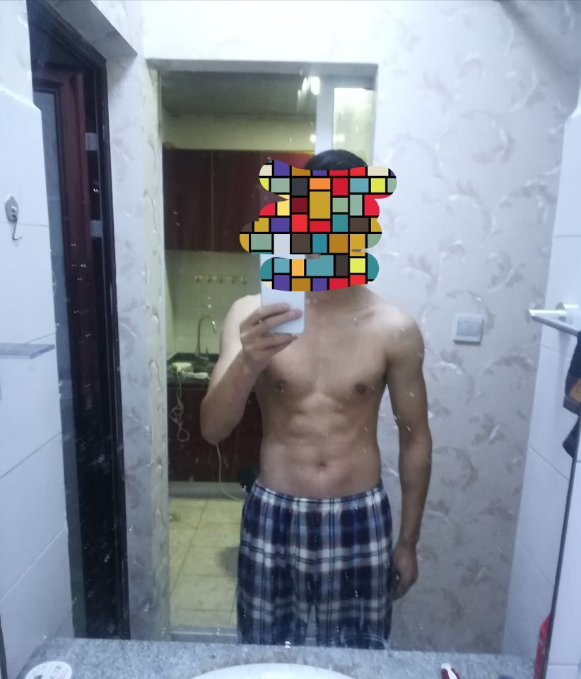
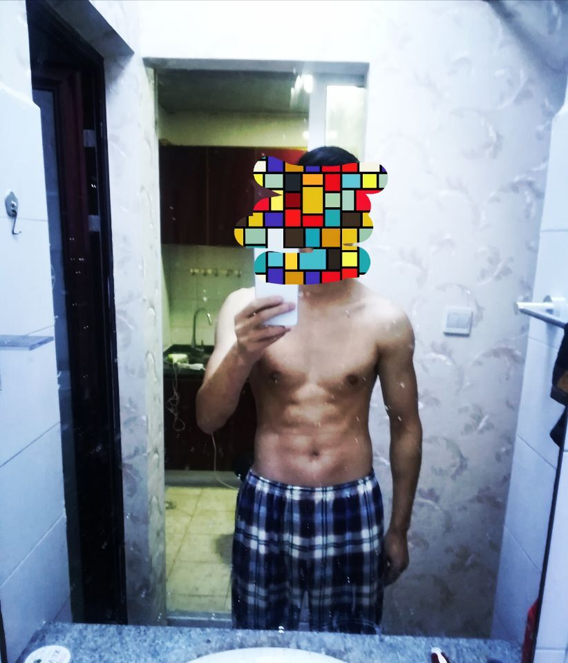
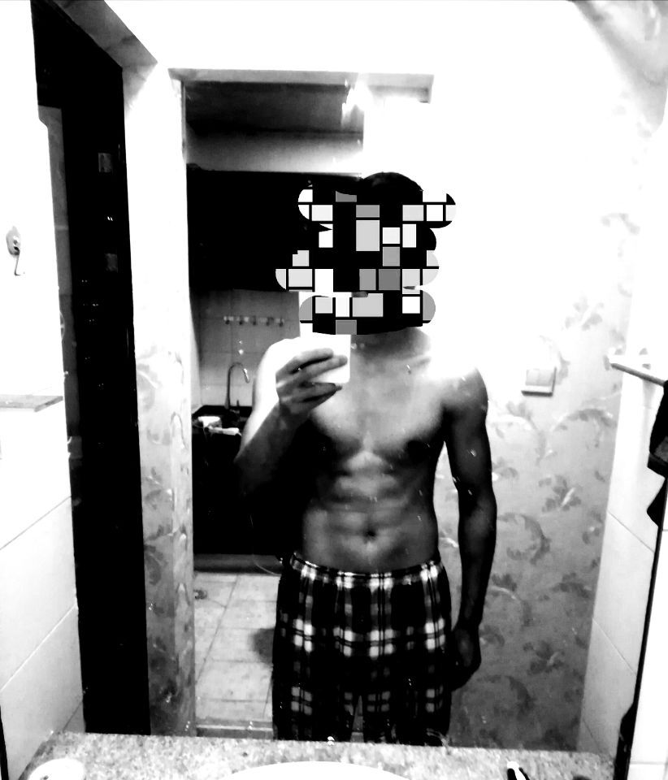

2018，运动有我¶
Note
生活多运动多健康，工作了，多了一份承担，健康的体魄对男人来说是保障工作、生活稳步前进的基石……,瞎说什么，就是想开个链接晒晒，hh
| 时间: | 2018年03月19日 大学的时候最喜欢做引体向上，巅峰时有26个，今晚回家后去活动广场上的单杠上引了几个，肯定做不了那么多啦，好像有些个不标准，毕竟现在比之前可是重了10来斤，不容易，哈哈。 |
|---|
| 时间: | 2018年03月04日 |
|---|
Note
一直有断断续续的运动健身，有点效果，但还是很瘦，今天就晒一个muscle 滤镜三重奏，重点不是格子睡裤哈，请忽略。
one：原始图
two: 个性滤镜
three: 硬像滤镜
hh，加了滤镜效果贼好，不过都是照骗，为毛感觉还是有点肉，但穿衣服了别人说像竹竿一样瘦，额，不说了，好好锻炼，目标140。